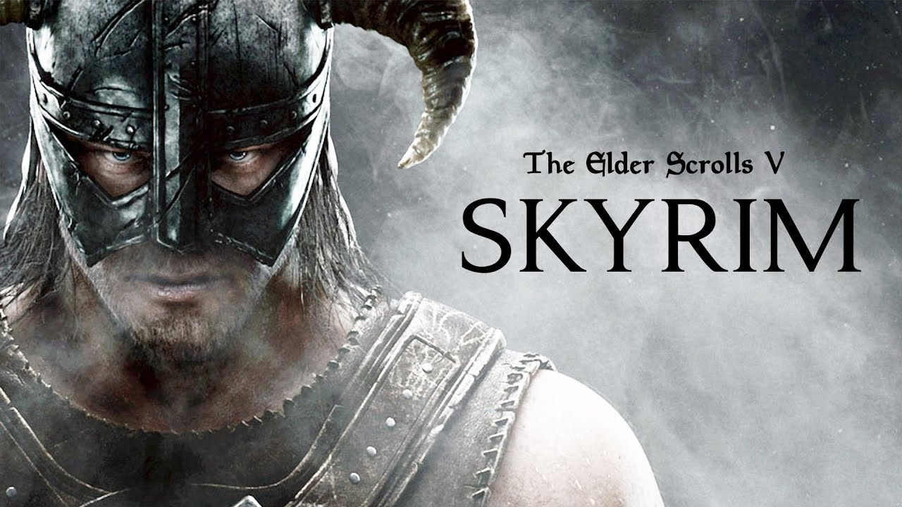
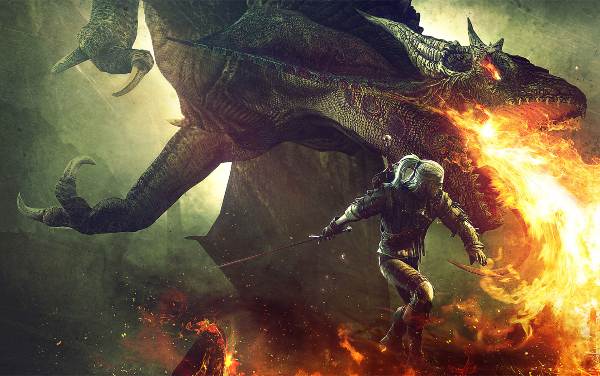
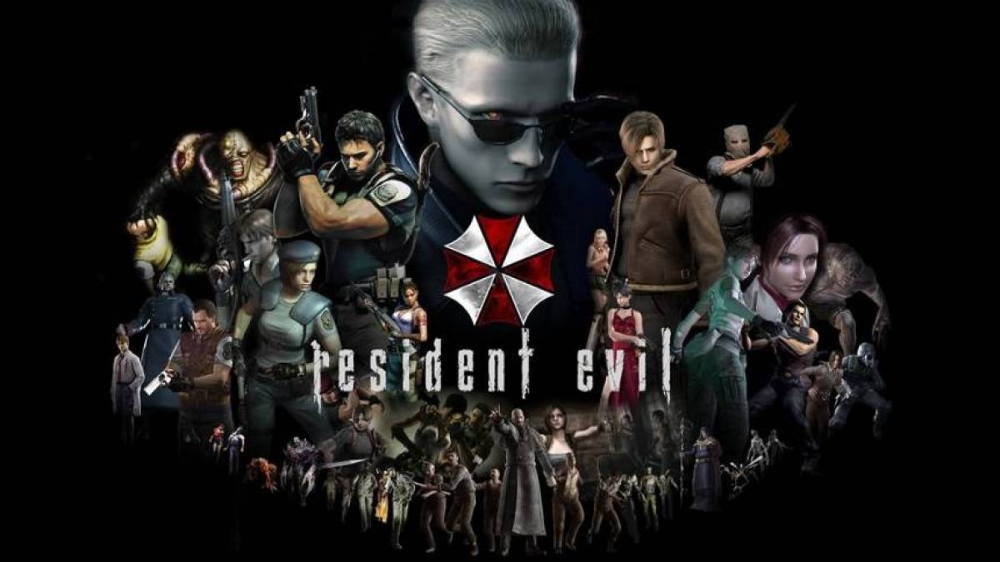

Apresentamos à vocês alguns dos jogos/franquias mais marcantes já desenvolvidos e jogados por muitos de nós players.
THE BEST GAMES
1°) Red Dead Redemption 1 e 2

Dois jogos, duas histórias, mas ambos unidos por um passado em comum... Uma velha gangue de foras-da-lei que tenta sobreviver ao progresso de sociedade que não admite mais "ratos" como eles, no que resta ainda do antigo Velho Oeste, uma terra selvagem onde a única lei conhecida é a do 38, que conforme o tempo passa a civilidade empregna-se nas raízes dessa terra até que o último membro seja civilizado, e aqueles que não se adequarem deverão ser eliminados.
2°) GTA 5

Três caras completamente diferentes, cada um com características "exóticas", porém com uma única característica em comum, a sede insáciavel por dinheiro, dispostos a fazer coisa para alcançar esse objetivo eles se uniram, então é melhor não ficar no caminho deles.
3°) Far Cry 3

Imagine você e seus amigos sendo mantidos serem capturados por um traficante de escravos e narcóticos sem que ninguém saiba em algumas ilhas do Pacífico e você é o único que consegue escapar, e agora tem o dever de resgatar todos os seus companheiros, esse é Jason Brody de Far Cry 3.
4°) Assassin's Creed 2

Assassin's Creed retrata a trajetória de Ezio Auditore como um Assassino, desde descobrir o que é a Irmandade dos Assassinos, descobrir e trazer justiça à aqueles que destruíram sua família, até descobrir segredos de uma civilização antiga que veio muito antes de nós e que esta muito além da compreensão humana.
5°) God Of War

A sequência de jogos que retrata o caminho do último espartano vivo, Kratos, em busca de vingança contra os deuses do Olimpo, que mesmo tendo sendo fiel à eles, fizeram com que Kratos manchasse suas próprias mãos com o sangue da sua própria família, irado com isso Kratos começa sua jornada sem descanço para matar um por um.
6°) Skyrim

O jogo que levou o gênero RPG a outro nível, com sua ambientalização na Terra Média, junto de elementos de fantasia do estilo "Magia e Dragões", este jogo lhe possibilita trilhar seus próprios passos, permitindo que você seja desde um lendário caçador de dragões até um miserável batedor de carteiras.
7°) The Witcher 3

Existem RPGs antes e depois de Skyrim, mas também existem aqueles antes e depois de "The Witcher 3"... Ele revolucionou mais uma vez o gênero com seus gráficos impressionantes, uma riqueza em detalhes, uma gameplay que apesar de completa é simples de ser compreendida , e a história que finaliza a trilogia desse jogo, onde Geralt of Rivia, um bruxo caçador de recompensas, ao mesmo tempo que esta em busca de um antigo amor, procura por Ciri, uma jovem detentora de muito poder que esta sendo caçada por causa disso.
8°) The Legend of Zelda: Breath of the Wild

Este é considerado por muitos um dos melhores jogos já desenvolvidos, uma verdadeira obra-prima, contando com uma ótima jogabilidade, introdução de novas mecânicas, um íncrivel aberto que interage com o jogador e incentiva ele a explorar e experimentar novas possibilidades, e uma história que começa com o nosso protagonista Link acordando após dormir por cem anos não lembrando de nada do que aconteceu, e precisa ir atrás de suas memórias e derrotar a força maligna Calamity Ganon que dominou o castelo Hyrule, mas que não tem uma sequência linear a ser seguida, é o jogador que decide como será a sua jornada
9°) A saga Resident Evil

"STARSS",se você já ouviu isso e sabe quem disse, você provavelmente não deve ter dormido bem a noite, os jogos de Resident Evil retratam a luta de sobreviver contra a ameaça de zumbis e aberrações genéticas desenvolvidos pela Umbrella Corps, realmente não é para qualquer um...
10°) Os jogos do Mario

E por fim, mas não menos importante, o nosso querido italiano com o bigode mais icônico do mundo dos games, conta com uma longa carreira desde 1985, quando salvou a princesa Peach pela primeira vez, até os dias de hoje com diversos jogos de diversos estilos como, aventura, estratégia, esportes e até de corrida.
Ops! Se deixamos algum outro jogo bom de lado, por favor entre em contato com a gente.